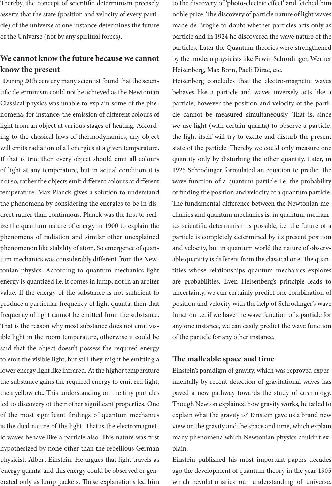

ereby, the concept of scientic determinism precisely
asserts that the state (position and velocity of every parti-
cle) of the universe at one instance determines the future
of the Universe (not by any spiritual forces).
We cannot know the future because we cannot
know the present
During 20th century many scientist found that the scien-
tic determinism could not be achieved as the Newtonian
Classical physics was unable to explain some of the phe-
nomena, for instance, the emission of dierent colours of
light from an object at various stages of heating. Accord-
ing to the classical laws of thermodynamics, any object
will emits radiation of all energies at a given temperature.
If that is true then every object should emit all colours
of light at any temperature, but in actual condition it is
not so, rather the objects emit dierent colours at dierent
temperature. Max Planck gives a solution to understand
the phenomena by considering the energies to be in dis-
creet rather than continuous. Planck was the rst to real-
ize the quantum nature of energy in 1900 to explain the
phenomena of radiation and similar other unexplained
phenomenon like stability of atom. So emergence of quan-
tum mechanics was considerably dierent from the New-
tonian physics. According to quantum mechanics light
energy is quantized i.e. it comes in lump; not in an arbiter
value. If the energy of the substance is not sucient to
produce a particular frequency of light quanta, then that
frequency of light cannot be emitted from the substance.
at is the reason why most substance does not emit vis-
ible light in the room temperature, otherwise it could be
said that the object doesn’t possess the required energy
to emit the visible light, but still they might be emitting a
lower energy light like infrared. At the higher temperature
the substance gains the required energy to emit red light,
then yellow etc. is understanding on the tiny particles
led to discovery of their other signicant properties. One
of the most signicant ndings of quantum mechanics
is the dual nature of the light. at is the electromagnet-
ic waves behave like a particle also. is nature was rst
hypothesized by none other than the rebellious German
physicist, Albert Einstein. He argues that light travels as
‘energy quanta’ and this energy could be observed or gen-
erated only as lump packets. ese explanations led him
to the discovery of ‘photo-electric eect’ and fetched him
noble prize. e discovery of particle nature of light waves
made de Broglie to doubt whether particles acts only as
particle and in 1924 he discovered the wave nature of the
particles. Later the Quantum theories were strengthened
by the modern physicists like Erwin Schrodinger, Werner
Heisenberg, Max Born, Pauli Dirac, etc.
Heisenberg concludes that the electro-magnetic waves
behaves like a particle and waves inversely acts like a
particle, however the position and velocity of the parti-
cle cannot be measured simultaneously. at is, since
we use light (with certain quanta) to observe a particle,
the light itself will try to excite and disturb the present
state of the particle. ereby we could only measure one
quantity only by disturbing the other quantity. Later, in
1925 Schrodinger formulated an equation to predict the
wave function of a quantum particle i.e. the probability
of nding the position and velocity of a quantum particle.
e fundamental dierence between the Newtonian me-
chanics and quantum mechanics is, in quantum mechan-
ics scientic determinism is possible, i.e. the future of a
particle is completely determined by its present position
and velocity, but in quantum world the nature of observ-
able quantity is dierent from the classical one. e quan-
tities whose relationships quantum mechanics explores
are probabilities. Even Heisenberg’s principle leads to
uncertainty, we can certainly predict one combination of
position and velocity with the help of Schrodinger’s wave
function i.e. if we have the wave function of a particle for
any one instance, we can easily predict the wave function
of the particle for any other instance.
e malleable space and time
Einstein’s paradigm of gravity, which was reproved exper-
imentally by recent detection of gravitational waves has
paved a new pathway towards the study of cosmology.
ough Newton explained how gravity works, he failed to
explain what the gravity is? Einstein gave us a brand new
view on the gravity and the space and time, which explain
many phenomena which Newtonian physics couldn’t ex-
plain.
Einstein published his most important papers decades
ago the development of quantum theory in the year 1905
which revolutionaries our understanding of universe.